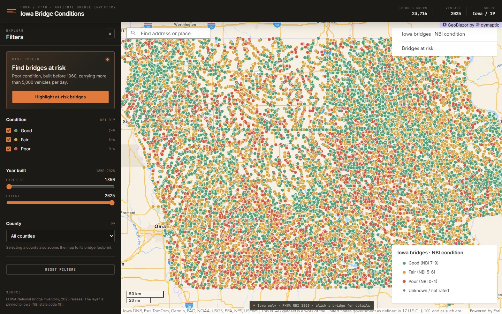
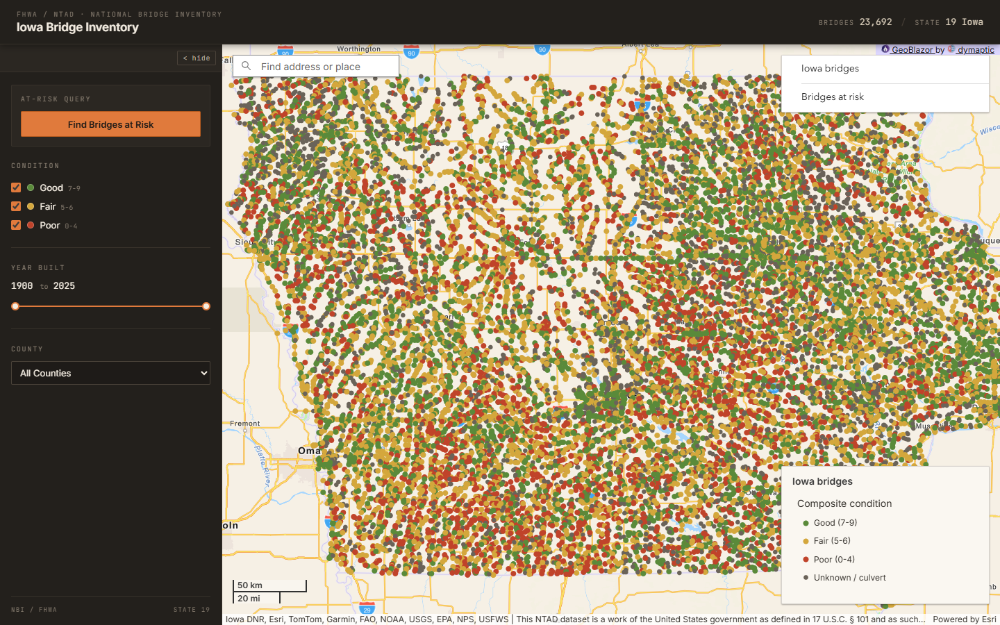

Iowa Code Camp 2026 · Room 109
Don't Feed the Machine Spaghetti
Code quality principles for the AI era
Two apps. Same prompt. Same model. About half an hour each.


My premise: code quality matters to agents
- Agents read like humans, just faster and with better memory
- Architecture makes it easier to reason and expand with less context
- Avoids bugs hidden in duplicated but divergent code
- We have to tell the agents about our coding standards
What constitutes a context?
My context, once the standards load
Measured: a real first request carries 14,400 tokens before the agent reads a file. CODE_STYLE.md and CODE_STYLE-CSHARP.md add 27,719 characters, about 6,900 tokens, and every full-context run read them, so they sit in the bar. The bare arm starts at 1,663 tokens: about twelve times less context, same prompt, same model.
KISS — keep it short n sweet
- Every skill adds a description to context, for every subagent. Remove the skills you are not using.
- Keep your main
AGENTS.mdconcise. Point at other files for specific task context, and use hooks to make sure those files are read.
The prompt
Build a .NET web app that shows Iowa bridge conditions on an ArcGIS map, using the GeoBlazor package. Bridges visually distinguishable by condition; narrow the map by condition, year built and county; clicking a bridge shows its details; and a view of the bridges at risk — built before 1960, more than 5,000 vehicles a day — that respects whatever narrowing is already in effect. Show Iowa bridges only. It has to run locally and the map has to render in a browser. Work autonomously: make your own decisions and tell me what you verified.
Shortened for the slide. The prompt names no file, folder, component, render mode or framework version.
Two conditions, same prompt
No context
none of it
- Bare prompt
- No instruction file
- No skills, no hooks
no instructions, no skills
Full context
my global instructions
- Same prompt
- Global AGENTS.md, 9,431 characters
- 70 skill descriptions, 30,880 characters
- The two standard files, read every run
- Hooks that gate those files
skills, instructions, the two standard files, harness text
Criteria
Problems I ran into
- Cluttered context, duplicated skills
AGENTS.mdreferenced other files, but they were never read- The test running agent tried to change the prompt context for the full and no-context runs
Stage one: build the app from nothing
| Measured | No context | Full context |
|---|---|---|
| Working map in a browser | 3 of 3 | 3 of 3 |
| Build green, zero warnings | 3 of 3 | 3 of 3 |
| Cost | ||
| Output tokens, median | 221,186 | 189,957 |
| Wall time, median | 2,095.8 s | 1,547.5 s |
| Structure of the tree | ||
| Files holding NBI field names | 3 / 3 / 4 | 0 / 2 / 4 |
.editorconfig and build props | 0 of 3 | 2 of 3 |
| Solution file | 0 of 3 | 2 of 3 |
| Test project | 0 of 3 | 1 of 3 |
| Deepest folder | 3 · 7 · 7 | 4 · 3 · 4 |
| Files holding more than one type | 5 | 2 |
Lines of .cs and .razor, median | 1,092 | 1,554 |
Stage two: add a feature
County comparison, added to the same six apps.
| Measure | No context | Full context |
|---|---|---|
| Output tokens, median | 104,723 | 205,149 |
| Wall time, median | 528.8 s | 769.1 s |
| Wins, paired | 3 of 3 | 0 of 3 |
Each stage seeds from the app the same arm and repetition produced in the stage before.
Stage three: CSV export, rows must match the app's own count
| Measure | No context | Full context |
|---|---|---|
| Output tokens, median | 79,424 | 145,486 |
| Wall time, median | 836.8 s | 500.8 s |
| Wins, paired | 3 of 3 | 0 of 3 |
After three stages, what the code looks like
| Measure | No context | Full context |
|---|---|---|
| Files outside the UI folder | 1 · 8 · 1 | 18 · 30 · 4 |
| Interfaces | 0 · 0 · 0 | 0 · 3 · 0 |
| Test files | 0 · 0 · 0 | 0 · 5 · 0 |
| Largest file, lines | 361 · 862 · 320 | 899 · 272 · 410 |
Code inside .razor blocks | 630 · 486 · 632 | 528 · 496 · 902 |
Full context costs more at every stage
No contextFull context
Median of the three: 417,917 against 515,519, to build the same app and add the same two features. Wall time, same basis: 3,082 s against 3,706 s.
What the analyser saw
SonarQube, all eighteen runs.
| Median per stage | No contextbuild · feature · feature | Full contextbuild · feature · feature |
|---|---|---|
| Code smells | 3 · 4 · 4 | 2 · 2 · 3 |
| Debt, minutes | 10 · 15 · 15 | 5 · 5 · 5 |
| Debt per 1,000 lines, minutes | 7.0 · 8.7 · 7.3 | 3.2 · 2.6 · 2.3 |
| Cognitive complexity | 91 · 134 · 161 | 101 · 163 · 197 |
| Cognitive complexity per 1,000 lines | 64 · 78 · 79 | 66 · 83 · 90 |
Zero bugs in all eighteen runs, and every project rated A on maintainability and reliability. One caveat: the second full-context repetition carried its own browser-verification script into the repo, and SonarQube scores one vulnerability there, so three of the eighteen runs are rated D on security.
Where the error goes
No context
the message only
catch (Exception ex)
{
Console.Error.WriteLine(
$"Could not count bridges: {ex.Message}");
}
9 calls, all in one app · 20 minutes of debt
Full context
the whole exception
catch (Exception exception)
{
Logger.LogError(exception,
"Highlighting the selected bridge failed.");
}
8 injection sites · 0 minutes of debt
| All eighteen runs | No context | Full context |
|---|---|---|
Console.Error.WriteLine | 9 | 0 |
ILogger<T> injected | 3 | 8 |
Where the code lives
No context
everything in the UI folder
Components/
Bridges/
BridgeMap.razor
BridgeSidebar.razor
CountyComparison.razor
BridgeExportService.cs
CountyComparisonService.cs
NbiFeatureService.cs
BridgeFilterState.cs
IowaCounties.cs
Program.cs
1 file outside the UI folder
Full context
a layer above it
Components/ markup only Models/ nine types BridgeFilters.cs BridgeDetail.cs BridgeExportRow.cs CountyComparison.cs Services/ six types BridgeCatalogClient.cs BridgeCsvWriter.cs BridgeExportService.cs BridgeDetailReader.cs Extensions/ Program.cs
18 files outside the UI folder
Two of three each way: one naked app does keep a Models folder, and one full-context app kept everything in the UI folder.
The takeaway
Agents have gotten really good at coding, even without specific guidelines.
Context can still slightly improve architecture and lower debt, but it costs more tokens and is not reliably faster.
What to do Monday
CLAUDE.md / AGENTS.mdThank you!
Questions?
Instruction template · the gate · the prompts · the runner · all 18 measured runs
timpurdum.dev/post/2026/11/7/
iowa-code-camp.html